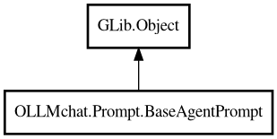

BaseAgentPrompt
Object Hierarchy:

Description:
public class BaseAgentPrompt : Object
Base class for agent prompt generators.
Provides common functionality for loading resource sections based on agent name. Can be used directly as a default implementation that
returns empty system prompt and passes through user input.
Content:
Properties:
- protected virtual string agent_name { public get; public set; }
The name of the agent (e.g., "code-assistant"). Used to derive the
resource path.
- public string shell { get; set; }
User's shell (optional, can be set after construction).
Creation methods:
Methods:
- public void fill (ChatCall call, string user_text) throws Error
Fills a ChatCall with system and user prompts. This is the only public
entry point for prompt generation.
- protected virtual string generate_system_prompt () throws Error
Generates the complete system prompt for the agent. Default
implementation returns empty string.
- protected virtual string generate_user_info_section ()
Generates the user info section for system prompt.
- protected virtual string generate_user_prompt (string user_input) throws Error
Generates the user prompt. Default implementation returns the input
text as-is.
- protected string get_os_version ()
Gets OS version directly (implemented here, not a signal).
- protected string load_section (string section_name) throws Error
Loads a static section from resources.
Signals:
Inherited Members:
All known members inherited from class GLib.Object
- @get
- @new
- @ref
- @set
- add_toggle_ref
- add_weak_pointer
- bind_property
- connect
- constructed
- disconnect
- dispose
- dup_data
- dup_qdata
- force_floating
- freeze_notify
- get_class
- get_data
- get_property
- get_qdata
- get_type
- getv
- interface_find_property
- interface_install_property
- interface_list_properties
- is_floating
- new_valist
- new_with_properties
- newv
- notify
- notify_property
- ref_count
- ref_sink
- remove_toggle_ref
- remove_weak_pointer
- replace_data
- replace_qdata
- set_data
- set_data_full
- set_property
- set_qdata
- set_qdata_full
- set_valist
- setv
- steal_data
- steal_qdata
- thaw_notify
- unref
- watch_closure
- weak_ref
- weak_unref